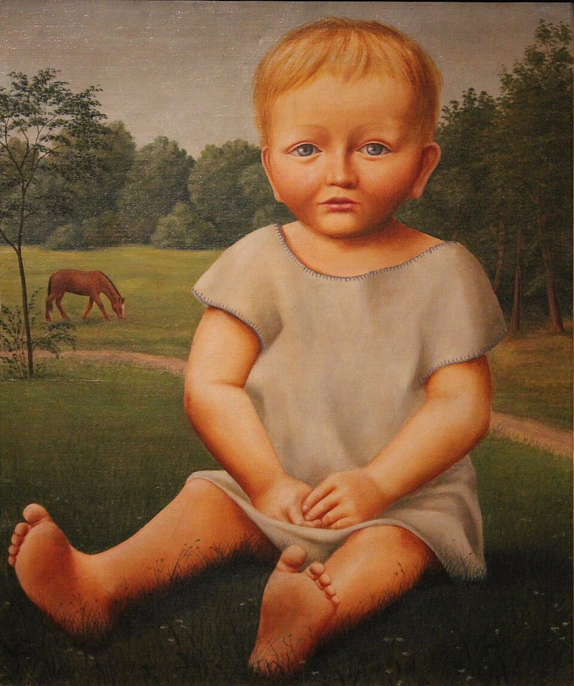
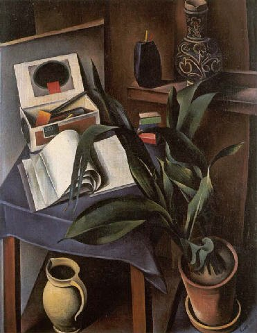
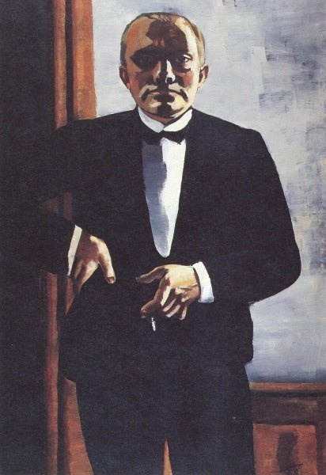

고전주의적 계열
신즉물주의(Neue Sachlichkeit, New Objectivity)는 제1차 세계대전 이후 1920년대 독일에서 나타난 미술·문화적 경향이다. 표현주의의 격정적 주관성과 왜곡에서 물러나 차갑고 명료하며 구체적인 현실을 다시 바라보려 했다. 1925년 만하임 미술관 관장 구스타프 프리드리히 하르틀라우프가 전시 제목에 이 명칭을 사용하면서 운동의 이름이 굳어졌다.
화가의 감정을 폭발시키기보다 냉정하게 바라본다.
윤곽과 물체의 존재감이 다시 강해진다.
전쟁상흔, 도시, 계급, 부르주아, 성 산업을 직접 다룬다.
종종 세밀하고 차가운 표면 묘사를 선호한다.
대상을 미화하지 않고 때로는 잔혹할 만큼 객관적으로 제시한다.
제국 붕괴, 혁명, 참전군인의 상흔과 사회적 혼란이 남는다.
민주주의와 문화적 자유가 확대되지만 정치적 양극화도 심하다.
경제적 불안과 계층 갈등이 극단적으로 드러난다.
하르틀라우프가 ‘Neue Sachlichkeit’라는 이름 아래 후기 표현주의 세대를 묶는다.
전위예술이 탄압되고 많은 작가가 해직·망명·검열을 겪는다.
오토 딕스, 게오르게 그로스, 게오르크 숄츠 등이 전쟁 상이군인, 매춘, 부패한 부르주아 사회를 날카롭게 풍자했다. 객관성은 중립이 아니라 현실을 외면하지 않는 공격적 시선이 된다.
게오르크 슈림프, 알렉산더 카놀트 등은 조용한 인물과 정물을 선명하고 안정된 형태로 그렸다. 감정은 억제되고 사물이 낯설 만큼 또렷하게 존재한다.



| 항목 | 표현주의 | 신즉물주의 |
|---|---|---|
| 감정 | 주관적·격정적 | 억제·거리두기 |
| 형태 | 왜곡·각진 형태 | 선명·단단한 형태 |
| 색 | 감정적 비자연색 | 보다 절제된 색과 물질감 |
| 현실 | 내면에 맞게 변형 | 불편한 현실을 차갑게 노출 |
| 한 문장 | “나는 이렇게 느낀다.” | “현실은 이렇게 존재한다 — 외면하지 말라.” |
신즉물주의는 바이마르 독일을 중심으로 한 운동이다. 주변 독일어권에도 냉정한 초상과 사회 비판적 리얼리즘이 나타났지만, 국가별 독립 학파보다 독일 내부의 사회비판·고전주의·사진적 객관성의 차이를 보는 편이 정확하다.
| 국가·지역·세부 사조 | 지역적 특징 | 대표 화가·제작자 |
|---|---|---|
| 독일 — 베리스트 |
| 오토 딕스, 게오르게 그로스, 게오르크 숄츠 |
| 독일 — 고전주의·마술적 사실주의 |
| 크리스티안 샤트, 게오르크 슈림프, 알렉산더 카놀트 |
| 독일 — 사진적 객관성 |
| 아우구스트 잔더, 알베르트 렝거파치 |
Neue Sachlichkeit이라는 말은 회화뿐 아니라 사진·건축·디자인·문학에서도 1920년대 독일의 기능적·비감상적·정확한 태도를 설명하는 데 사용된다. 사진에서는 아우구스트 잔더와 알베르트 렝거파치가 대표적인 객관적 시각을 보여준다.
신즉물주의는 표현주의의 감정 과장 이후, 전후 독일 사회를 냉정하고 날카롭게 관찰하려 한 회화와 사진의 태도다.
위 국가별 전개 표에 제시한 인물은 상단에 이미 소개되었는지와 관계없이 모두 다시 확인할 수 있게 배치했다. 로컬 이미지 파일이 없는 인물은 이미지 추가 예정 카드로 남긴다.
숄츠는 부르주아 사회와 군국주의의 위선을 날카로운 풍자로 드러낸 신즉물주의의 사회비판적 화가다.
슈림프는 고요하고 단순화된 인물과 공간을 통해 현실이 낯설게 멈춘 듯한 마술적 사실주의의 감각을 만들었다.
카놀트는 정물과 건축적 공간을 정확하고 차갑게 구성해 사물의 물질감과 거리감을 강조했다.
잔더의 연작은 다양한 직업과 계층의 인물을 정면으로 기록하며 바이마르 사회를 차갑고 체계적인 시각 언어로 드러냈다.
렝거파치는 산업과 식물, 사물을 정밀하게 촬영해 신즉물주의와 맞닿은 사진적 객관성의 태도를 대표한다.
전쟁의 영웅담 대신 망가진 신체와 사회의 냉혹함을 직면시킨다.
정치·언론·군부의 얼굴을 날카로운 캐리커처로 해부한다.
매끈하고 차가운 표면이 인물의 심리적 거리감과 도시적 냉소를 만든다.